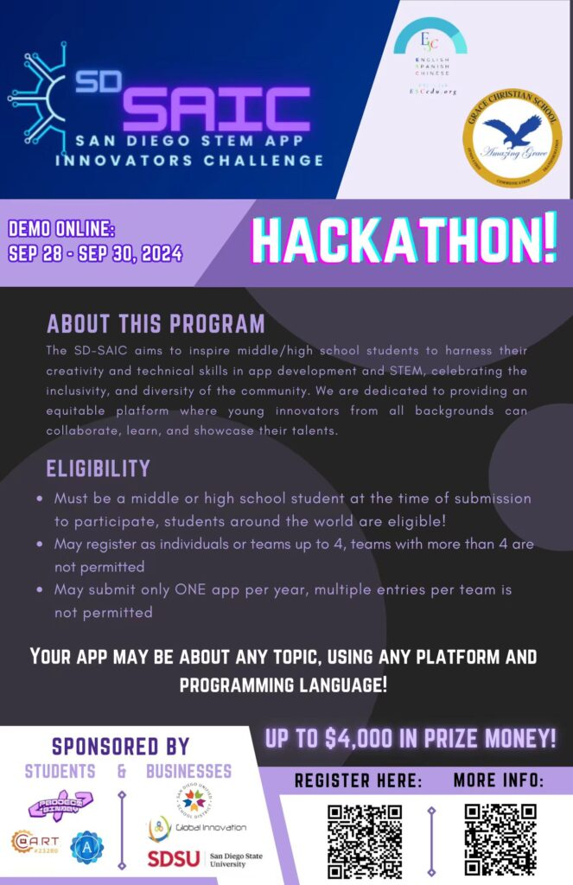
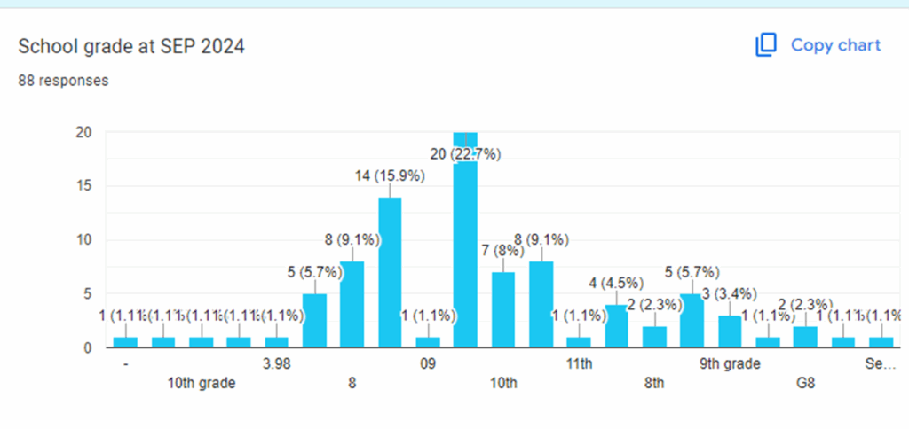

简介：圣地亚哥 STEM APP 创新挑战赛（SD-SAIC）是一项年度活动，旨在激励初高中学生提升应用开发与创新能力，并赋能他们的成长。
活动详情：
加州圣地亚哥 – 2024年10月12日 – 圣地亚哥 STEM APP 创新挑战赛（SAIC）年度比赛圆满落幕，共有来自六个国家和地区的100 多名学生参赛。参赛者均为初高中学生，他们围绕教育、环境保护、医疗与健康、社区支持等重要主题开发了创新应用。
颁奖典礼在美丽的 Del Mar 希尔顿酒店举行，恰逢第 32 届 CAST-USA 年会的教育分论坛。SAIC 由 ESC Club（Amazing Grace Christian School 的附属组织）主办，旨在激励并赋能学生在应用开发中发挥创造力和技术能力。

“SAIC 的使命是培养创新精神，推动 STEM 教育的卓越发展，并颂扬我们全球社区的包容性与多样性，”ESC Club 创始人 Alex Tang 表示。“通过提供一个让不同背景的学生协作并展示才华的平台，我们希望培养下一代创新者。”
除表彰获奖者外，颁奖典礼还邀请了大学教授、AI 行业专家以及杰出的教育工作者和学者发表演讲。他们的见解进一步凸显了夯实 STEM 教育基础对培养下一代领袖和创新者的重要性。
鸣谢：
主办方： Amazing Grace Christian School
联合主办学生社团： ESC Club、APP In Club、Project Binary Club
赞助方： ICCI Non-Profit
特邀嘉宾演讲人：
- Poway 学区代表
- Shu Chien 博士 — 加州大学圣地亚哥分校生物工程荣休教授、医学工程研究所荣休教员
- Thomas Hu — 加州理工学院（Caltech）Charles Lee Powell 应用与计算数学讲席教授
- Meng 博士 — ISEF 评委
评委：
- 大学教授
- 行业专家
- 学校 STEM 教师
学生志愿者：
- APP In Club 成员
- Project Binary Club 成员